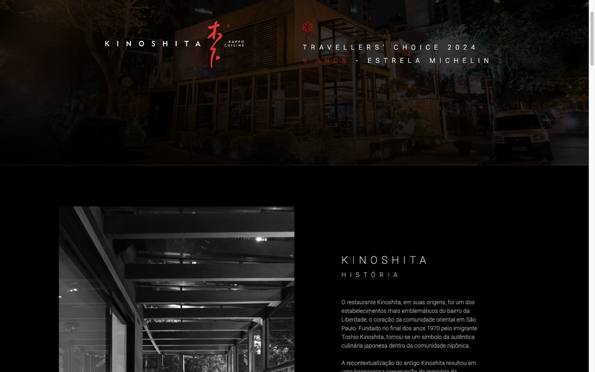
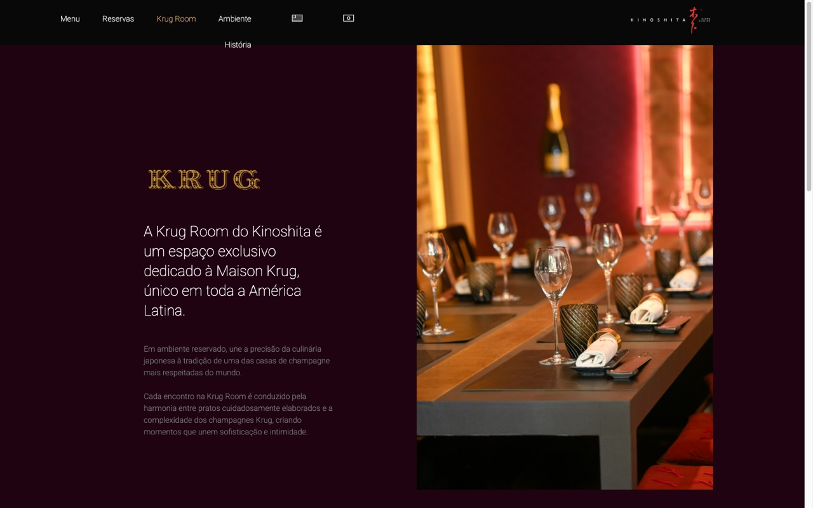
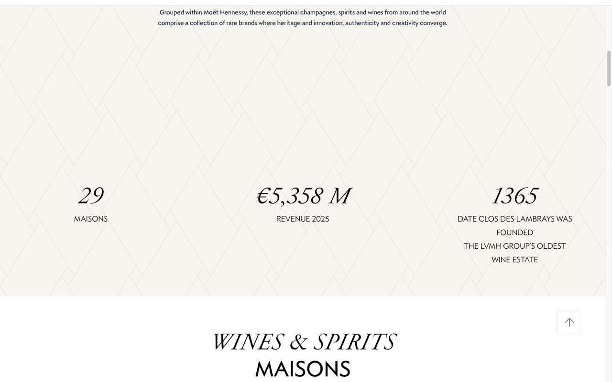
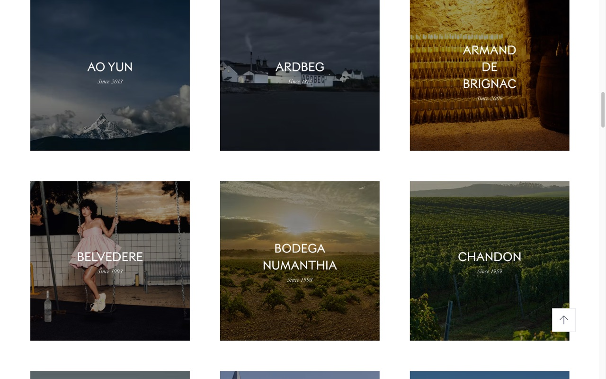
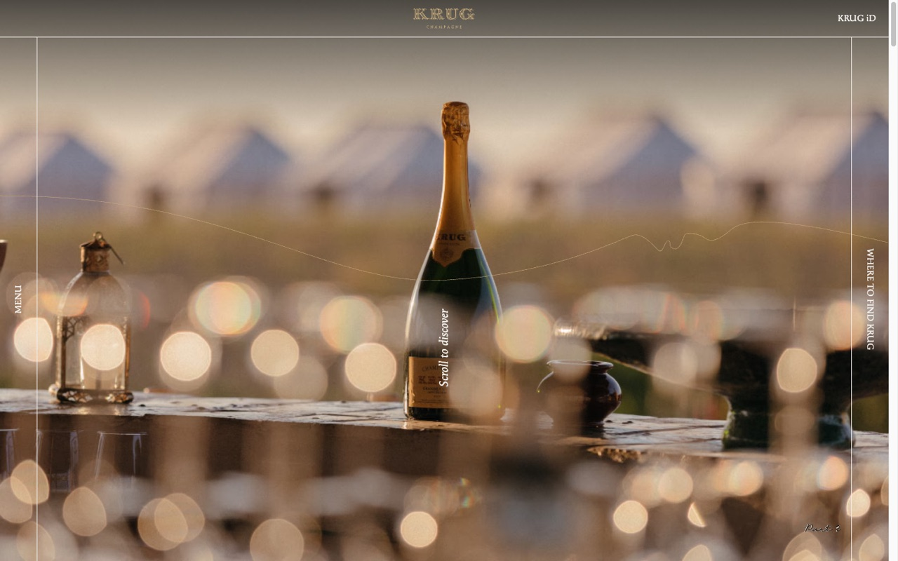
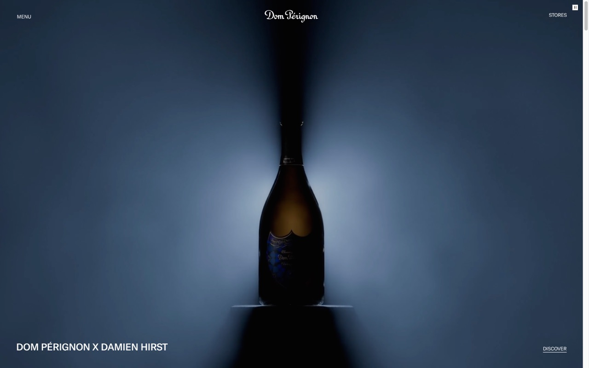

O restaurante
Kinoshita
Cozinha kappo, em que o cozinheiro corta e cozinha diante do cliente. Nasceu na Liberdade no fim dos anos 1970, com Toshio Kinoshita, e hoje recebe na Rua Jacques Félix, 405, na Vila Nova Conceição.
Jantar harmonizado · Kappo e champagne
Um menu degustação kappo harmonizado com champagnes e vinhos das Maisons Moët Hennessy, conduzido pelo sommelier João Perrone.
01 · O que a pesquisa encontrou
O restaurante
Cozinha kappo, em que o cozinheiro corta e cozinha diante do cliente. Nasceu na Liberdade no fim dos anos 1970, com Toshio Kinoshita, e hoje recebe na Rua Jacques Félix, 405, na Vila Nova Conceição.
A anfitriã das Maisons
29 Maisons de vinhos e destilados do grupo LVMH, de Krug e Dom Pérignon a Hennessy. Uma linguagem de herança e savoir-faire, com serifa clássica, itálicos e muito respiro.
A ponte entre as duas
Dentro do Kinoshita existe uma sala dedicada à Maison Krug, que o restaurante descreve como única em toda a América Latina. É o elo natural entre a cozinha e o champagne.
02 · Identidade visual
Assinatura
Serifa clássica em caixa mista, como o logotipo atual da Moët Hennessy (Cormorant Garamond).
Títulos
Itálico de alto contraste, o mesmo gesto das páginas de Maisons da LVMH.
Rótulos
Geométrica em caixa alta e espaçada, como a marca do Kinoshita e os rótulos das Maisons (Jost).
03 · Referências coletadas pelos agentes






04 · Como será a página
05 · Quem está construindo
Etapa 1
Pesquisa e checagemQuatro pesquisadores (marca, restaurante, visual e harmonização) e verificadores que tentam derrubar cada fato.
Etapa 2
Direção criativaKapferer na estratégia de luxo, Alina Wheeler no sistema visual, UX Designer na estrutura, Ogilvy e Joanna Wiebe no texto.
Etapa 3
Brief do Design ChiefUma fonte única com fatos verificados, tokens, copy final e menu.
Etapa 4
Três direções em paraleloTrês UI Engineers constroem três versões completas ao mesmo tempo.
Etapa 5
JúriMarca, design e conversão avaliam as três e apontam o que levar de cada uma.
Etapa 6 · concluída
No arA vencedora lapidada em localhost, com formulário e painel de inscrições ao vivo.